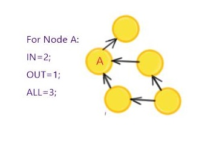

Know your Graph

In this very short tutorial, we will see how to get some statistical information out of our graph. Gelly includes built-in methods for retrieving various graph properties and metrics.
Suppose that we want to retrieve information regarding the number of vertices and number of edges. Then, we can simply do as follows:
// get the number of vertices
Long numVertices = graph.numberOfVertices();
// get the number of edges
Long numEdges = graph.numberOfEdges();In the last tutorial, we had learnt how to create a Graph using the FromDataSet() method. Here is a snapshot of some statistics obtained by calling the numberOfVertices() and numberOfEdges() methods on that Graph. Our statistics confirm that the used twitter data set consists of 23370 vertices (users) and 33101 edges (follows relationships) as mentioned on the download site.

In a directed graph, the indegree of a node is the number of edges pointing towards that node while the outdegree is the number of edges going out of it. The total degree is the sum of both in and out degrees. Gelly allows to get the degree information (IN,OUT,ALL ) of every node by it's easy to use built in methods:

// get a DataSet of <vertex ID, out-degree> pairs for all vertices
DataSet<Tuple2<Long, Long>> vertexOutDegrees = graph.outDegrees();
// get a DataSet of <vertex ID, in-degree> pairs for all vertices
DataSet<Tuple2<Long, Long>> vertexInDegrees = graph.inDegrees();
// get a DataSet of <vertex ID, degree> pairs for all vertices, where degree
//is the sum of in- and out- degrees
DataSet<Tuple2<Long, Long>> totDegrees = graph.getDegrees();
For a full list of available methods, refer to the corresponding section in the documentation.